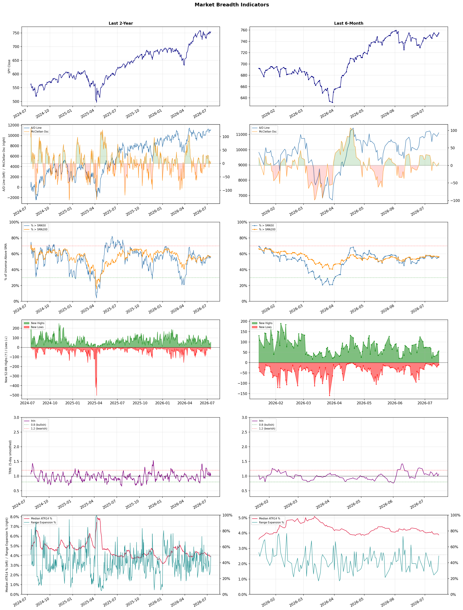

A daily market breadth and sector rotation report for active investors
| Item | Read |
|---|---|
| Regime | Selective Risk-On |
| Risk posture | Selective |
| Universe | 1,339 stocks tracked · 56 new 52-week highs · 30 active swing setups |
| Breadth | 55.8% of tracked stocks are above SMA50 — neutral range, new highs exceed new lows (56 vs 10) |
| Leadership | Oil & Gas Refining & Marketing, Diagnostics & Research, and Health Information Services |
| Weakest groups | Other Industrial Metals & Mining, Uranium, and Gold |
Use this report to prioritize research and chart review; validate entries, stops, liquidity, earnings, and risk before acting.
| Item | Read |
|---|---|
| Primary read | Selective Risk-On regime with Selective risk posture. |
| Research queue | PBF, DINO, MPC, VLO, UGP |
| Leadership focus | Oil & Gas Refining & Marketing, Diagnostics & Research, and Health Information Services |
| Caution list | Other Industrial Metals & Mining, Uranium, and Gold |
| Review prompt | Check extension risk, chart location, fundamentals, valuation, and earnings before using any research row. |
| Item | Read |
|---|---|
| Primary read | 0 active risk warnings; use screen output as watchlist input only. |
| Bullish screens | DINO, BNS, BNY, ING, ELVN |
| Bearish screens | PRCT, KEP, ORLY, MRLN |
| Alerts / levels | Automated trigger, stop, ATR, liquidity, reward/risk, and event-risk levels are pending future enrichment. |
| Review prompt | Open the linked chart, define trigger and invalidation, then check liquidity and event risk independently. |
Risk Posture: Selective — screen backdrop supports selective research in leading industries
Metric context: McClellan below -50 = elevated selling pressure; below -100 = washout territory. Range Expansion = share of stocks with daily range above their 20-day average. Signal Density = share of tracked names appearing in signal screens.
| Breadth Date | % > SMA50 | % > SMA200 | New Highs | New Lows | McClellan | Median Range | Avg Range | Median ATR14 | Range Expansion | Signal Density |
|---|---|---|---|---|---|---|---|---|---|---|
| 2026-07-15 | 55.8% | 56.4% | 56 | 10 | 7.4 | 3.6% | 4.4% | 3.9% | 48.6% | 2.8% |

Prior comparison date: July 14, 2026
| Metric | Prior | Current | Change |
|---|---|---|---|
| Regime | Selective Risk-On | Selective Risk-On | unchanged |
| Risk Posture | Selective | Selective | unchanged |
| % > SMA50 | 55.3% | 55.8% | +0.5 pts |
| % > SMA200 | 55.9% | 56.4% | +0.5 pts |
| New Highs | 51 | 56 | +5 |
| New Lows | 13 | 10 | +3 |
Top-10 industries entering: REIT - Hotel & Motel and REIT - Office. Top-10 industries leaving: Airlines and Insurance - Property & Casualty. New multi-signal long setups: AGNC, BNY, CALY, COLB, CUZ, DX, ELVN, ETSY, FBP, IBKR. New multi-signal short setups: none.
| Status | Tickers | Read |
|---|---|---|
| Added | AGNC, ALHC, BNY, CALY, COLB, CUZ, DX, ELVN | New technical screen matches vs prior report. |
| Removed | AAL, CNC, CVS, D, EIX, ELV, FE, HR | No longer present in today's technical screen matches. |
| Still Active | ABCL, BNS, DINO, GNW, MRLN, MRVI, PBA | Appeared in both current and prior reports. |
| Promoted | none | Model Screen Score improved by at least 15 points. |
| Downgraded | none | Model Screen Score declined by at least 15 points. |
| Direction | Industry | ETF | Prior Rank | Current Rank | Days | Rank Change |
|---|---|---|---|---|---|---|
| Rose | Oil & Gas Refining & Marketing | CRAK | 83 | 1 | 28 | +82 |
| Rose | Household & Personal Products | XLP | 98 | 18 | 42 | +80 |
| Rose | Insurance - Property & Casualty | KIE | 90 | 11 | 42 | +79 |
| Rose | Internet Retail | N/A | 90 | 20 | 35 | +70 |
| Rose | Insurance Brokers | N/A | 86 | 23 | 42 | +63 |
Bull: The rising relative strength of the Oil & Gas Refining & Marketing sector can be attributed to a combination of improving market sentiment and geopolitical stability, as indicated by headlines discussing hopes for Middle East de-escalation, which could alleviate supply chain fears. Additionally, the recent performance of ETFs like CRAK hitting new 52-week highs and the sector-wide rally, exemplified by PBF Energy's 6.1% jump, suggests that investors are increasingly optimistic about refining margins and overall demand recovery, positioning this sector as a strong investment opportunity.
Bear: While the recent rise in the Oil & Gas Refining & Marketing sector, exemplified by CRAK's new 52-week highs, may initially suggest a bullish outlook, it is essential to consider the underlying demand uncertainties and potential oversupply risks. Geopolitical stability in the Middle East does not guarantee sustained demand recovery, especially as global economic conditions remain volatile and consumers face inflationary pressures. Furthermore, any significant drop in oil prices due to demand woes could quickly erode refining margins, making the current optimism appear overly optimistic and potentially misplaced.
Verdict: The Oil & Gas Refining & Marketing sector is experiencing a rally driven by improving market sentiment and hopes for geopolitical stability in the Middle East, which have alleviated supply chain concerns and boosted investor confidence in refining margins. However, the key risk lies in the potential for demand uncertainties and oversupply, particularly if global economic conditions worsen or inflation continues to pressure consumers, which could lead to a significant decline in oil prices and negatively impact refining profitability. Investors should remain cautious and monitor economic indicators closely to assess the sustainability of this upward trend.
Sources: Yahoo Finance, Google News
Bull: The Household & Personal Products sector is likely experiencing rising relative strength due to the overall resilience of consumer staples amid mixed economic signals, as indicated by recent headlines highlighting consumer stocks' fluctuations. The positive sentiment from reports of consumer stocks rising, coupled with the focus on stable investments like household products in uncertain economic times, suggests that investors are increasingly seeking reliable, essential goods, which bodes well for leading companies in this sector like Procter & Gamble. Additionally, the mention of best consumer staples stocks to buy in 2026 reflects a long-term bullish outlook, reinforcing confidence in the sector's stability and growth potential.
Bear: While the bull thesis highlights the resilience of consumer staples, it overlooks critical headwinds facing the Household & Personal Products sector, such as rising input costs, supply chain disruptions, and potential shifts in consumer spending behavior as inflation persists. Additionally, the mention of "newly overvalued stocks" suggests that many companies in this space may be trading at unsustainable valuations, which could lead to corrections as market sentiment shifts. This combination of economic pressures and valuation concerns raises significant doubts about the sector's ability to maintain its current momentum.
Verdict: The Household & Personal Products sector is likely experiencing rising relative strength due to its status as a defensive investment during economic uncertainty, as consumers prioritize essential goods despite mixed economic signals. However, key risks include rising input costs and potential shifts in consumer spending behavior due to persistent inflation, which could pressure margins and lead to corrections in overvalued stocks. Investors should closely monitor these economic indicators and consider the potential for valuation adjustments when evaluating their positions in this sector.
Sources: Yahoo Finance, Google News
Bull: The Property & Casualty insurance sector is experiencing rising relative strength primarily due to increased digitalization and growth in exposure, as highlighted in the Yahoo Finance article discussing five P&C insurers to buy. Additionally, the positive sentiment reflected in recent headlines, such as the discussions around the SPDR S&P Insurance ETF (KIE) and specific stocks like Globe Life and Aon, suggests a bullish outlook from Wall Street, driven by strong Q1 performance and favorable market conditions. This combination of technological advancement and robust financial results positions the sector favorably for continued growth.
Bear: While the Property & Casualty insurance sector may currently exhibit rising relative strength, this trend could be misleading due to potential overvaluation and underlying economic pressures. Factors such as rising interest rates, inflationary pressures, and increased claims costs from natural disasters and climate change may erode profit margins, counteracting the benefits of digitalization and growth in exposure. Furthermore, the recent headlines may reflect short-term optimism rather than sustainable long-term growth, as the industry's fundamentals could face significant headwinds in a volatile economic environment.
Verdict: The Property & Casualty insurance sector's rising relative strength is primarily driven by increased digitalization and a growing exposure to insured assets, which enhance operational efficiency and revenue potential. However, investors should remain cautious of key risks, particularly the potential for profit margin erosion due to rising interest rates, inflation, and escalating claims costs from climate-related events, which could undermine the sector's long-term growth prospects.
Sources: Yahoo Finance, Google News
Bull: The Internet Retail sector is experiencing rising relative strength primarily due to a strategic pivot towards leveraging technology and AI, as highlighted by the interest in e-commerce stocks and AI investments in recent headlines. Companies like ASOS PLC are navigating challenges with a forward-looking vision, indicating a focus on innovation and adaptability, which positions them favorably for future growth. Additionally, the positive outlook on e-commerce stocks for 2026 suggests robust consumer demand and market confidence, further bolstering the sector's performance against others.
Bear: While the Internet Retail sector may show rising relative strength, this trend could be misleading as it is largely driven by short-term market sentiment rather than sustainable fundamentals. The emphasis on technology and AI, while promising, does not address the underlying issues such as increasing competition, supply chain disruptions, and inflationary pressures that are squeezing margins. Furthermore, the optimistic projections for e-commerce stocks in 2026 may not account for potential shifts in consumer behavior post-pandemic, which could lead to a decline in demand as brick-and-mortar stores regain footing.
Verdict: The Internet Retail sector's rising strength is fundamentally driven by a strategic embrace of technology and AI, enabling companies to enhance operational efficiency and customer engagement, which is crucial for capturing market share in a competitive landscape. However, the key risk lies in the potential for shifting consumer behavior as brick-and-mortar stores recover, coupled with persistent supply chain challenges and inflationary pressures that could undermine profitability and growth projections. Investors should closely monitor these dynamics to gauge the sustainability of the sector's upward trajectory.
Sources: Google News
Bull: The rising relative strength of the Insurance Brokers industry can be attributed to robust earnings reported by key players like Ryan Specialty, which highlights strong demand and operational resilience in the sector. Additionally, the anticipated growth driven by mergers and acquisitions, as noted in the Yahoo Finance article, suggests a consolidation trend that could enhance profitability and market positioning for brokers, outweighing the short-term disruption fears linked to AI technologies mentioned in the Bloomberg and Barron's headlines. This combination of solid earnings and strategic industry consolidation positions the sector favorably for future growth.
Bear: While the recent earnings from companies like Ryan Specialty may seem promising, the broader industry faces significant headwinds from the disruptive potential of AI technologies, which could fundamentally alter the insurance brokerage landscape by reducing the need for traditional broker services. Additionally, the consolidation trend may not necessarily lead to enhanced profitability; instead, it could result in increased regulatory scrutiny and operational challenges that undermine the competitive positioning of smaller players. Thus, the optimism surrounding earnings and M&A activity may be overly optimistic in light of these looming disruptions.
Verdict: The Insurance Brokers industry is experiencing a rise due to strong earnings from key players like Ryan Specialty and a consolidation trend that could enhance profitability and market positioning. However, a key risk lies in the disruptive potential of AI technologies, which may diminish the demand for traditional broker services and create operational challenges, potentially undermining the optimistic outlook for the sector. Investors should closely monitor advancements in AI and regulatory responses to consolidation as these factors could significantly impact future growth.
Sources: Google News
| Direction | Industry | ETF | Prior Rank | Current Rank | Days | Rank Change |
|---|---|---|---|---|---|---|
| Fell | Copper | COPX | 6 | 83 | 42 | -77 |
| Fell | Other Industrial Metals & Mining | N/A | 22 | 88 | 42 | -66 |
| Fell | Communication Equipment | IYZ | 9 | 73 | 42 | -64 |
| Fell | Aerospace & Defense | ITA | 21 | 85 | 42 | -64 |
| Fell | Electrical Equipment & Parts | XLI | 7 | 69 | 42 | -62 |
Bear: While the electrification trend and demand for copper in technology sectors are often touted as growth drivers, the reality is that these narratives may not translate into sustained price support for copper, especially if global manufacturing continues to weaken. The headlines indicate a growing concern over economic slowdowns, which could dampen demand for copper across multiple industries, leading to oversupply and price declines. Furthermore, the competitive dynamics between copper miners and futures suggest that investors may be increasingly wary of mining stocks, potentially diverting capital away from COPX in favor of more stable or diversified investments.
Bull: The relative weakness of copper, as indicated by the COPX ETF, can primarily be attributed to concerns over global manufacturing slowing down, as highlighted in the headline "If Global Manufacturing Weakens, Here’s What Happens to This Copper ETF." Additionally, the competitive landscape between copper miners and futures, as discussed in "COPX vs. CPER," suggests that investor sentiment may be shifting towards other commodities or investment strategies, impacting copper's relative strength. However, the ongoing electrification trend and the increasing demand for copper in AI and technology sectors, as noted in multiple headlines, indicate a potential rebound as these sectors continue to grow.
Verdict: The copper industry is currently experiencing a downward trend primarily due to concerns over a slowdown in global manufacturing, which is dampening demand and leading to potential oversupply. While the electrification and technology sectors present growth opportunities for copper, the key risk lies in the sustained economic weakness that could further suppress demand and shift investor sentiment away from copper investments. To navigate this environment, investors should closely monitor manufacturing indicators and consider diversifying into more stable commodities or sectors.
Sources: Yahoo Finance, Google News
Bear: While the bull analyst highlights the potential of AI-driven innovations and productivity improvements, these advancements may not materialize quickly enough to offset the significant headwinds facing the Other Industrial Metals & Mining sector. Ongoing macroeconomic challenges, such as rising interest rates and inflation, could dampen demand for industrial metals, while increased regulatory scrutiny and environmental concerns may further hinder operational efficiencies and profitability. Additionally, the focus on a select few "top picks" may indicate a narrowing of investor interest, suggesting that the broader sector could continue to underperform as capital flows concentrate on only the most promising companies.
Bull: The relative weakness in the Other Industrial Metals & Mining sector can be attributed to a combination of macroeconomic factors and competitive pressures highlighted in recent headlines. Specifically, the emphasis on AI-driven innovations in the mining sector, as noted by the Boston Consulting Group, suggests that companies not adopting advanced technologies may lag behind, while the focus on productivity improvements by McKinsey indicates that traditional practices may not suffice in a rapidly evolving market. Additionally, with top stock picks in the metals sector being highlighted by BofA, there may be a shift in investor sentiment towards more promising segments, further impacting the relative strength of this industry.
Verdict: The Other Industrial Metals & Mining sector is likely experiencing a decline due to a confluence of macroeconomic pressures, including rising interest rates and inflation, which are dampening demand for industrial metals. While advancements in AI and productivity improvements present potential long-term benefits, the immediate risk lies in the possibility that these innovations may not be implemented swiftly enough to counteract current headwinds, leading to continued underperformance in the broader sector. Investors should remain cautious and consider reallocating capital towards companies demonstrating resilience and adaptability in this challenging environment.
Sources: Google News
Bear: While the bull analyst highlights mixed market sentiment and potential undervaluation in specific stocks, the broader communication equipment sector is facing significant headwinds that cannot be overlooked. The ongoing shift towards digital communication and the rise of alternative technologies are likely to diminish demand for traditional communication equipment, leading to structural challenges for established players. Furthermore, the cautious outlook for companies like Charter Communications reflects deeper issues within the sector, including heightened competition and potential regulatory pressures that could stifle growth prospects, making the current rally appear unsustainable.
Bull: The Communication Equipment sector is experiencing a decline in relative strength primarily due to mixed market sentiment and valuation concerns highlighted in recent headlines. For instance, while there is optimism around specific stocks like Viavi Solutions, which is noted as potentially undervalued after a recent rally, broader concerns about the overall sector's performance are evident in the cautious outlook for companies like Charter Communications. Additionally, the focus on emerging technologies and competition from alternative communication methods may be overshadowing traditional equipment manufacturers, contributing to the sector's relative weakness.
Verdict: The Communication Equipment sector's decline is primarily driven by a shift towards digital communication and the emergence of alternative technologies that undermine demand for traditional equipment, creating structural challenges for established players. The key risk highlighted by the bear thesis is the potential for heightened competition and regulatory pressures, which could further stifle growth prospects and render any short-term rallies unsustainable. Investors should approach this sector with caution, focusing on companies that demonstrate adaptability to these evolving market conditions.
Sources: Yahoo Finance, Google News
Bear: While the bull analyst highlights increased government spending and a potential rearmament cycle as positive indicators for the Aerospace & Defense sector, the current relative-strength trend is falling, suggesting that investor sentiment is not aligned with these optimistic projections. Moreover, the recent headlines indicate that even with heightened defense spending, stocks like Lockheed Martin have not significantly benefitted from the Iran conflict, raising concerns about the sustainability of this growth and the sector's vulnerability to broader market volatility and geopolitical risks. Investors may be shifting towards high-growth sectors for better returns, indicating a potential long-term stagnation for Aerospace & Defense stocks amidst changing market dynamics.
Bull: The Aerospace & Defense sector is experiencing a relative strength decline primarily due to market volatility and investor sentiment shifting towards high-growth sectors, such as technology, as evidenced by headlines discussing the surge in defense stocks amid increased government spending on weapons and AI battlefield technology. Despite the positive outlook for defense spending, highlighted by NATO's commitment to increasing defense budgets, concerns over geopolitical tensions and the impact of the Iran conflict may have tempered investor enthusiasm, leading to a cautious approach towards the sector. As the industry is still in the early stages of a rearmament cycle, the potential for future growth remains strong, but current market dynamics are overshadowing these long-term fundamentals.
Verdict: The Aerospace & Defense sector is experiencing a decline in relative strength primarily due to shifting investor sentiment towards high-growth sectors, despite increased government spending and a potential rearmament cycle. The key risk highlighted by the bear thesis is the sector's vulnerability to broader market volatility and geopolitical uncertainties, which could hinder sustainable growth and lead to long-term stagnation in defense stocks. Investors should remain cautious and consider reallocating assets to sectors with more robust growth potential while monitoring geopolitical developments closely.
Sources: Yahoo Finance, Google News
Bear: While the bull analyst points to broader economic concerns and geopolitical tensions as reasons for the Electrical Equipment & Parts sector's declining relative strength, it is essential to consider that these factors may actually exacerbate the sector's vulnerabilities. Rising oil prices not only increase operational costs for manufacturers but also heighten inflationary pressures, which could lead to reduced capital expenditures in the industrial sector as companies prioritize cost-cutting measures. Furthermore, while AI and infrastructure investments are gaining traction, they may not translate into immediate benefits for traditional electrical equipment companies, leaving them at risk of stagnation or decline as they struggle to adapt to a rapidly evolving market landscape.
Bull: The Electrical Equipment & Parts sector is likely experiencing a decline in relative strength due to broader economic concerns, as indicated by mixed equity futures and the geopolitical tensions highlighted in the recent headlines. The mention of rising oil prices due to the US-Iran conflict could be creating uncertainty in industrial supply chains and costs, while the focus on AI and infrastructure investments in other sectors may be diverting investor interest away from traditional electrical equipment companies. Additionally, the strong performance of other industrial sectors, such as aerospace, further emphasizes the relative underperformance of the Electrical Equipment & Parts industry.
Verdict: The Electrical Equipment & Parts sector is likely experiencing a decline due to rising oil prices and geopolitical tensions, which are increasing operational costs and creating uncertainty in supply chains. This environment may lead to reduced capital expenditures as companies focus on cost-cutting, posing a significant risk of stagnation for traditional players in the industry. Investors should closely monitor these economic indicators and consider reallocating capital to sectors with stronger growth potential, such as aerospace or technology-driven industries.
Sources: Yahoo Finance, Google News
| Industry | Rank | ETF | 7d | 14d | 28d | 42d | Chg 42d | Size | 20D | 60D | Composite | Active Setups |
|---|---|---|---|---|---|---|---|---|---|---|---|---|
| Oil & Gas Refining & Marketing | 1 | CRAK | 11 | 54 | 83 | 55 | +54 | 7 | 24.2% | 25.4% | 0.928 | 0 |
| Diagnostics & Research | 2 | N/A | 7 | 3 | 13 | 19 | +17 | 16 | 17.1% | 33.3% | 0.926 | 0 |
| Health Information Services | 3 | N/A | 8 | 10 | 19 | 26 | +23 | 12 | 17.1% | 29.3% | 0.906 | 0 |
| Advertising Agencies | 4 | N/A | 9 | 11 | 11 | 61 | +57 | 7 | 9.4% | 37.3% | 0.901 | 0 |
| Banks - Diversified | 5 | N/A | 10 | 13 | 10 | 17 | +12 | 16 | 8.1% | 15.1% | 0.886 | 0 |
| Biotechnology | 6 | XBI | 1 | 4 | 15 | 44 | +38 | 93 | 15.0% | 17.9% | 0.878 | 1 |
| Medical Care Facilities | 7 | IHF | 6 | 9 | 42 | 36 | +29 | 9 | 13.5% | 21.1% | 0.870 | 0 |
| Healthcare Plans | 8 | IHF | 5 | 1 | 7 | 12 | +4 | 10 | 4.6% | 55.2% | 0.870 | 2 |
| REIT - Office | 9 | XLRE | 17 | 6 | 9 | 13 | +4 | 8 | 3.6% | 34.3% | 0.842 | 0 |
| REIT - Hotel & Motel | 10 | XLRE | 2 | 12 | 6 | 8 | -2 | 9 | 2.3% | 26.9% | 0.830 | 0 |
Rank columns (7d–42d) show the industry's rank that many trading days ago — lower is stronger. Chg 42d = rank change vs 42 trading days ago — positive means the industry moved up. 20D and 60D are the mean stock return within the industry over that period. Active Setups: count of today's swing-trade candidates from this industry appearing across all signal screens.
| Industry | Rank | ETF | 7d | 14d | 28d | 42d | Chg 42d | Size | 20D | 60D | Composite | Active Setups |
|---|---|---|---|---|---|---|---|---|---|---|---|---|
| Other Industrial Metals & Mining | 88 | N/A | 85 | 81 | 24 | 22 | -66 | 21 | -21.0% | -23.2% | 0.051 | 0 |
| Uranium | 87 | URA | 88 | 88 | 74 | 82 | -5 | 6 | -14.9% | -27.0% | 0.066 | 0 |
| Gold | 86 | GDX | 86 | 87 | 70 | 78 | -8 | 27 | -14.9% | -29.0% | 0.071 | 0 |
| Aerospace & Defense | 85 | ITA | 83 | 73 | 58 | 21 | -64 | 26 | -16.8% | -19.8% | 0.111 | 0 |
| Chemicals | 84 | N/A | 84 | 86 | 77 | 70 | -14 | 8 | -16.5% | -16.4% | 0.116 | 0 |
| Copper | 83 | COPX | 87 | 80 | 12 | 6 | -77 | 6 | -14.7% | -15.6% | 0.121 | 0 |
| Utilities - Renewable | 82 | N/A | 81 | 72 | 40 | N/A | N/A | 7 | -15.1% | -8.2% | 0.123 | 0 |
| Specialty Industrial Machinery | 81 | N/A | 80 | 69 | 57 | 49 | -32 | 21 | -8.5% | -16.5% | 0.217 | 1 |
| Telecom Services | 80 | N/A | 76 | 76 | 80 | 64 | -16 | 19 | -6.5% | -12.7% | 0.237 | 0 |
| Grocery Stores | 79 | N/A | 62 | 53 | 67 | N/A | N/A | 5 | -8.8% | -2.3% | 0.247 | 0 |
Rank columns (7d–42d) show the industry's rank that many trading days ago — lower is stronger. Chg 42d = rank change vs 42 trading days ago — positive means the industry moved up. 20D and 60D are the mean stock return within the industry over that period. Active Setups: count of today's swing-trade candidates from this industry appearing across all signal screens.
These are research candidates from top-ranked stocks, capped at five names per industry to avoid over-concentration. Returns shown (60D, 120D, 250D) are historical — they reflect where prices have already moved, not forward expectations. Extension Risk flags names that may require extra patience or a better entry point. They are not buy signals.
Chart: TV = TradingView chart (opens in browser); PDF = local chart file (if downloaded).
| Ticker | Name | Industry | Industry Rank | Market Cap | 60D Hist | 120D Hist | 250D Hist | Extension Risk | Research Reason | Chart |
|---|---|---|---|---|---|---|---|---|---|---|
| PBF | PBF Energy | Oil & Gas Refining & Marketing | 1 | N/A | 58.1% | 79.0% | 135.2% | Extended | Top-ranked in industry; extended | TV |
| DINO | HF Sinclair | Oil & Gas Refining & Marketing | 1 | N/A | 46.9% | 67.8% | 95.8% | Constructive | Top-ranked in industry | TV |
| MPC | Marathon Petroleum | Oil & Gas Refining & Marketing | 1 | N/A | 40.0% | 68.6% | 73.6% | Constructive | Top-ranked in industry | TV |
| VLO | Valero Energy | Oil & Gas Refining & Marketing | 1 | N/A | 30.9% | 55.5% | 104.4% | Constructive | Top-ranked in industry | TV |
| UGP | Ultrapar Participacoes | Oil & Gas Refining & Marketing | 1 | N/A | 2.5% | 38.5% | 103.3% | Constructive | Top-ranked in industry | TV |
| PSNL | Personalis | Diagnostics & Research | 2 | N/A | 134.6% | 63.6% | 146.3% | Very extended | Top-ranked in industry; very extended | TV |
| GH | Guardant Health | Diagnostics & Research | 2 | N/A | 80.3% | 40.8% | 240.8% | Extended | Top-ranked in industry; extended | TV |
| NEO | NeoGenomics | Diagnostics & Research | 2 | N/A | 73.7% | 14.3% | 109.8% | Extended | Top-ranked in industry; extended | TV |
| ADPT | Adaptive Biotechnologies | Diagnostics & Research | 2 | N/A | 58.3% | 30.3% | 111.4% | Extended | Top-ranked in industry; extended | TV |
| NTRA | Natera | Diagnostics & Research | 2 | N/A | 33.1% | 14.2% | 86.9% | Constructive | Top-ranked in industry | TV |
| HNGE | Hinge Health | Health Information Services | 3 | N/A | 97.9% | 106.5% | 82.6% | Extended | Top-ranked in industry; extended | TV |
| TXG | 10x Genomics | Health Information Services | 3 | N/A | 75.4% | 101.7% | 269.8% | Extended | Top-ranked in industry; extended | TV |
| TDOC | Teladoc Health | Health Information Services | 3 | N/A | 70.8% | 57.8% | 23.4% | Extended | Top-ranked in industry; extended | TV |
| CERT | Certara | Health Information Services | 3 | N/A | 13.5% | -26.8% | -32.2% | Constructive | Top-ranked in industry | TV |
| WAY | Waystar Holding | Health Information Services | 3 | N/A | -12.1% | -23.2% | -39.6% | Lagging | Top-ranked in industry; lagging | TV |
| EVC | Entravision Communications | Advertising Agencies | 4 | N/A | 213.6% | 240.6% | 348.2% | Very extended | Top-ranked in industry; very extended | TV |
| MGNI | Magnite | Advertising Agencies | 4 | N/A | 49.5% | 43.4% | -14.8% | Constructive | Top-ranked in industry | TV |
| DV | DoubleVerify | Advertising Agencies | 4 | N/A | 9.7% | 12.4% | -23.4% | Constructive | Top-ranked in industry | TV |
| STGW | Stagwell | Advertising Agencies | 4 | N/A | 4.3% | 11.8% | 54.9% | Constructive | Top-ranked in industry | TV |
| OMC | Omnicom Group | Advertising Agencies | 4 | N/A | 2.9% | 3.0% | 9.3% | Constructive | Top-ranked in industry | TV |
These are technical screen matches from existing signal files. They are not trade recommendations. Trigger, stop, ATR, liquidity, reward/risk, and event risk still require separate validation until those inputs are available.
Model Screen Score is weighted by signal count, industry rank, freshness, and setup type. It is not a probability of profit, expected return, or suitability rating. Industry cap: max 3 candidates per industry.
Signal glossary: Momentum Pullback = stock in an uptrend that has pulled back 10–30% and shows re-entry conditions. MA Compression = short- and long-term moving averages converging, often preceding a directional move. Three-Day Up/Down = three consecutive closes in the same direction. New 52Wk High/Low = price reached a new annual extreme.
Chart: TV = TradingView chart (opens in browser); PDF = local chart file (if downloaded).
| Ticker | Industry | Setups | Close | Industry Rank | Signal Count | Model Screen Score | Reason | Chart |
|---|---|---|---|---|---|---|---|---|
| DINO | Oil & Gas Refining & Marketing | New 52Wk High; Three-Day Up | 83.93 | 1 | 2 | 100 | Multi-signal; top industry breakout | TV |
| BNS | Banks - Diversified | New 52Wk High; Three-Day Up | 90.29 | 5 | 2 | 93 | Multi-signal; top industry breakout | TV |
| BNY | Banks - Diversified | New 52Wk High; Three-Day Up | 162.35 | 5 | 2 | 93 | Multi-signal; top industry breakout | TV |
| ING | Banks - Diversified | New 52Wk High; Three-Day Up | 33.31 | 5 | 2 | 93 | Multi-signal; top industry breakout | TV |
| ELVN | Biotechnology | New 52Wk High; Three-Day Up | 53.16 | 6 | 2 | 93 | Multi-signal; top industry breakout | TV |
| MRVI | Biotechnology | New 52Wk High; Three-Day Up | 7.04 | 6 | 2 | 93 | Multi-signal; top industry breakout | TV |
| CUZ | REIT - Office | New 52Wk High; Three-Day Up | 31.32 | 9 | 2 | 85 | Multi-signal; top industry breakout | TV |
| GNW | Insurance - Life | New 52Wk High; Three-Day Up | 9.74 | 12 | 2 | 85 | Multi-signal; new-high strength | TV |
| MFC | Insurance - Life | New 52Wk High; Three-Day Up | 43.07 | 12 | 2 | 85 | Multi-signal; new-high strength | TV |
| COLB | Banks - Regional | New 52Wk High; Three-Day Up | 32.57 | 15 | 2 | 85 | Multi-signal; new-high strength | TV |
| FBP | Banks - Regional | New 52Wk High; Three-Day Up | 27.07 | 15 | 2 | 85 | Multi-signal; new-high strength | TV |
| ETSY | Internet Retail | New 52Wk High; Three-Day Up | 85.74 | 20 | 2 | 77 | Multi-signal; new-high strength | TV |
| PBA | Oil & Gas Midstream | New 52Wk High; Three-Day Up | 50.33 | 21 | 2 | 77 | Multi-signal; new-high strength | TV |
| CALY | Leisure | New 52Wk High; Three-Day Up | 19.66 | 38 | 2 | 70 | Multi-signal; new-high strength | TV |
| UMC | Semiconductors | Momentum Pullback; Three-Day Up | 24.92 | 46 | 2 | 65 | Multi-signal; pullback setup | TV |
| STT | Asset Management | New 52Wk High; Three-Day Up | 186.59 | 51 | 2 | 65 | Multi-signal; new-high strength | TV |
| WT | Asset Management | New 52Wk High; Three-Day Up | 20.01 | 51 | 2 | 65 | Multi-signal; new-high strength | TV |
| AGNC | REIT - Mortgage | MA Compression; Three-Day Up | 11.32 | 56 | 2 | 60 | Multi-signal; compression setup | TV |
| DX | REIT - Mortgage | MA Compression; Three-Day Up | 13.32 | 56 | 2 | 60 | Multi-signal; compression setup | TV |
| NLY | REIT - Mortgage | MA Compression; Three-Day Up | 23.16 | 56 | 2 | 60 | Multi-signal; compression setup | TV |
| IBKR | Capital Markets | New 52Wk High; Three-Day Up | 97.41 | 65 | 2 | 55 | Multi-signal; new-high strength | TV |
| NMR | Capital Markets | New 52Wk High; Three-Day Up | 10.04 | 65 | 2 | 55 | Multi-signal; new-high strength | TV |
| ABCL | Biotechnology | Momentum Pullback | 6.74 | 6 | 1 | 58 | Single-signal; top industry pullback | TV |
| GH | Diagnostics & Research | Three-Day Up | 162.96 | 2 | 1 | 55 | Single-signal; top industry setup | TV |
| TMO | Diagnostics & Research | Three-Day Up | 535.29 | 2 | 1 | 55 | Single-signal; top industry setup | TV |
| ALHC | Healthcare Plans | Momentum Pullback | 20.93 | 8 | 1 | 50 | Single-signal; top industry pullback | TV |
Bearish setups — stocks making new lows or showing persistent downside patterns. Validate carefully before acting.
| Ticker | Industry | Setups | Close | Industry Rank | Signal Count | Model Screen Score | Reason | Chart |
|---|---|---|---|---|---|---|---|---|
| PRCT | Medical Devices | New 52Wk Low; Three-Day Down | 19.15 | 27 | 2 | 40 | Multi-signal; new-low weakness | TV |
| KEP | Utilities - Regulated Electric | New 52Wk Low; Three-Day Down | 11.46 | 42 | 2 | 35 | Multi-signal; new-low weakness | TV |
| ORLY | Auto Parts | New 52Wk Low; Three-Day Down | 82.73 | 74 | 2 | 25 | Multi-signal; new-low weakness | TV |
| MRLN | Aerospace & Defense | New 52Wk Low; Three-Day Down | 3.88 | 85 | 2 | 15 | Multi-signal; new-low weakness | TV |
How To Use This Report
| Use | Purpose |
|---|---|
| Market map | Start with breadth, regime, risk warnings, and what changed since the prior report. |
| Industry scan | Use leading, deteriorating, rising, and declining industries to focus research. |
| Research queue | Treat long-term candidates as names for deeper fundamental, valuation, and chart review. |
| Technical review | Treat bullish and bearish screen matches as watchlist inputs that require independent trigger, stop, liquidity, and event-risk checks. |
| Source follow-up | Use chart links and source files to verify raw inputs before relying on any row. |
What This Report Is Not
| Not | Meaning |
|---|---|
| Investment advice | The report does not evaluate personal objectives, risk tolerance, tax situation, account type, or suitability. |
| Buy/sell recommendation | Named tickers are research candidates or screen matches, not recommendations to transact. |
| Price target | The report does not provide fair value estimates, targets, or expected returns. |
| Trade plan | Trigger, stop, sizing, reward/risk, liquidity, and event-risk review remain separate user work. |
| Performance claim | Model Screen Score is not validated historical performance or a forecast of future results. |
| Item | Note |
|---|---|
| Version | Daily Report Methodology v1 |
| Model Screen Score | Screen-fit rank based on signal count, industry rank, freshness, and setup type. |
| Not predictive proof | The score is not expected return, probability of profit, historical validation, or suitability analysis. |
| Industry ranks | Composite industry ranks use existing daily ranking outputs and historical rank columns when available. |
| Research candidates | Long-term rows are research candidates from ranked stocks and leading industries, with historical returns labeled as historical only. |
| Technical matches | Bullish and bearish rows are screen matches requiring independent chart, trigger, stop, liquidity, and event-risk review. |
| Source | Status | Rows | Path |
|---|---|---|---|
| Market breadth | present | 1253 | breadth_20260715.csv |
| Industry composite rankings | present | 88 | all_industry_composite_20260715.csv |
| Top ranked stocks | present | 187 | top_ranked_composite_20260715.csv |
| All ranked stocks | present | 1339 | all_stocks_composite_sorted_20260715.csv |
| Top momentum pullbacks | present | 1487 | top_momentum_pullbacks_20260715.csv |
| MA compression | present | 1487 | ma_compression_stocks_20260715.csv |
| Three-day up/down | present | 121 | three_day_up_down_stocks_20260715.csv |
| New 52-week members | present | 66 | breadth_new_52wk_members_20260715.csv |
This report is generated from automated technical screens and is for informational and research purposes only. It is not investment advice, a solicitation, or a recommendation to buy or sell any security. Past performance is not indicative of future results. You are solely responsible for your own investment decisions. Consult a licensed financial advisor before acting on any information herein.